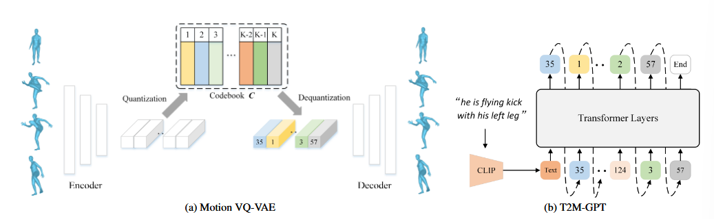
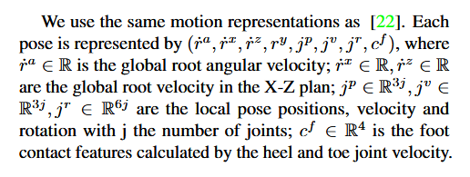

T2M-GPT
T2M-GPT
Introduction
本文研究了一种基于 VQ-VAE 和 GPT 的条件生成框架，用于从结构描述中生成人体运动。
VQ-VAE：基于 CNN，使用常见的训练方法（EMA 和 Code Reset），可以获得高质量的离散表示。
GPT：训练过程中加入 corruption strategy，缓解训练-测试差异。
提出了一个两阶段方法：
-
阶段 1：使用标准的 1D 卷积网络把运动序列映射成离散的代码索引。
-
阶段 2：学习标准的 GPT-like 模型，从预训练的文本嵌入中生成代码索引序列。
对于 GPT，下一个 token 的预测会带来训练和推理的不一致性。在训练过程中简单地破坏序列，可以缓解这种差异。
Related work
VQ-VAE
VQ-VAE 由 AutoEncoder 架构组成，旨在学习具有离散表示的重构。它对离散表示学习和先验学习进行了解耦。
单纯的 VQ-VAE 训练存在码书 (codebook) 崩溃的问题，即只有少量码字被激活。可以采用停止梯度和一些损失来优化码本，指数移动平均 (exponential moving average, EMA) 用于码本更新，在训练过程中重置失活码 (Code Reset)。
Method
整体框架由 Motion VQ-VAE 和 T2M-GPT 两个模块组成。

Motion VQ-VAE：学习运动数据与离散代码序列之间的映射关系。
T2M-GPT：根据文本描述生成代码索引，插入一个额外的可学习的 End 来指示生成的停止。
推断过程中，先以自回归的方式生成代码索引，再通过 Motion VQ-VAE 中的解码器恢复运动。
Motion VQ-VAE
给定运动序列 \(X=[x_1, x_2, ..., x_T], x_t\in \mathbb{R}^d\)，T 是帧数，d 是运动的维数。
目标是，通过一个自编码器和包含 K 个码的可学习码本 \(C=\{c_k\}^K_{k=1},c_k\in \mathbb{R}^{d_c}\) 来恢复运动序列，\(d_c\) 是码的维数。
给定 \(E\) 和 \(D\)，潜在特征 \(Z = E(x)=[z_1,z_2,...,z_{T/l}], z_i\in \mathbb{R}^{d_c}\)，\(l\) 表示编码器 \(E\) 的时间降采样率。
对于 \(z_i\)，通过 \(C\) 进行量化是为了找到 \(C\) 中最相似的元素：\(\hat{z}_i=\underset{c_k\in C}{\arg}\min||z_i-c_k||_2\)。
Optimization goal
为了优化 VQ-VAE，标准的优化目标如下： $$ \mathcal{L}{vq}=\mathcal{L}{re}+\underbrace{||sg[Z]-\hat{Z}||2}{\mathcal{L}{embed}}+\underbrace{\beta||Z-sg[\hat{Z}]||_2}{\mathcal{L}_{commit}} $$ 其中 \(\beta\) 是承诺损失的超参数，\(sg\) 是停止梯度算子。
对于重建，\(L1\) 平滑损失 \(\mathcal{L}_1^{smooth}\) 表现最好，并且对速度进行额外的正则化可以增强生成质量。
令 \(X_{re}\) 为 \(X\) 的重构运动，即 \(X_{re}=D(Z)\)，\(V(X)\) 为 \(X\) 的速度，其中 \(V=[v_1,v_2,...,v_{T-1}],v_i=x_{i+1}-x_i\)，因此重构目标如下： $$ \mathcal{L}{re}=\mathcal{L}_1^{smooth}(X,X{re})+\alpha\mathcal{L}1^{smooth}(V(X),V(X{re})) $$ 其中 \(\alpha\) 是平衡两种损失的超参数。
Quantization strategy
朴素的 VQ-VAE 训练方法会遇到 codebook collapse 的问题，即训练过程中编码本的利用率低下。有两种改进方法：
- EMA：是编码本 \(C\) 平滑演化，\(C^t\leftarrow\lambda C^{t-1}+(1-\lambda)C^t\)，\(C^t\) 是第 t 次迭代的编码本，\(\lambda\) 是指数移动常数。
- Code Reset：在训练过程中找出不活跃的编码，并根据输入数据重新分配。
Architecture
模型由以下三个部分组成：
- 1D 卷积
- 残差块
- ReLU 激活函数
使用步长为 2 的卷积进行时间降采样，降采样率 \(l=2^L\)，\(L\) 是残差块的个数，使用最近邻插值进行时间上采样。
T2M-GPT
使用 VQ-VAE，原始动作序列 \(X=[x_1,x_2,...,x_T]\) 可以被映射到一个索引序列 \(S=[s_1,s_2,...,s_{T/l},End],s_i\in[1,2,...,s_{T/l}]\)，\(s_i\) 是学习到的 codebook 中的索引，\(End\) 表示动作的结束。
通过将 \(S\) 投影回 codebook 对应的条目，得到 \(Z=[\hat{z}_1,\hat{z}_2,...,\hat{z}_{T/l}],\hat{z}_i=c_{s_i}\)，使用解码器 $D $ 可以将 \(Z\) 解码回重构的动作序列 \(X_{re}\)。
因此，T2M 的生成可以被表述为，一个自回归的 next-index 预测器：给定前 \(i-1\) 个索引和文本条件 \(c\)，使用 transformer 预测下一个索引的概率分布 \(p(S_i|c,S_{<i})\)。
Optimization goal
记全序列的似然函数为 \(p(S|c)=\underset{i=1}{\overset{|S|}{\prod}}p(S_i|c,S_{<i})\)，直接最大化数据分布的对数似然概率： $$ \mathcal{L}{trans}=\mathbb{E}{S\sim p(S)}[-\log p(S|c)] $$ 利用 CLIP 提取文本嵌入 c。
Causal Self-attention
在 T2M-GPT 中应用因果性注意力： $$ Attention=Softmax\left(\frac{QK^T\times mask}{\sqrt{d_k}} \right) $$ 其中，\(Q\in \mathbb{R}^{T\times d_k},K\in\mathbb{R}^{T\times d_k}\)，\(mask\) 是 causal mask，\(mask_{i,j}=-\infin\times I(i<j)+I(i\ge j)\)。这个因果掩码保证了未来信息不被允许参与当前令牌的计算。
为了进行推断，从文本嵌入开始，以自回归的方式生成索引，如果预测了 \(End\) 就停止生成。
Corrupted sequences for the training-testing discrepancy
训练和测试之间有差异。训练时使用 \(i-1\) 个正确的索引来预测下一个索引；推断时，不能保证作为条件的指标是正确的。
所以在训练过程中，采用一种数据增强策略，用随机的编码索引来代替 \(\tau \times 100\%\) 的真实码，\(\tau\) 可以是一个超参数，也可以是从 \(\tau\in \mathcal{U}[0,1]\) 中随机采样得到。
整理一下
-
VQ-VAE把连续的动作序列转换成离散的索引序列
-
T2M-GPT学习把文本映射到对应的动作索引，学习预测给定文本应该对应哪些动作序列
-
训练数据中有文本-动作对，提供了学习这种映射需要的监督信息
-
实际应用时，输入文本，T2M-GPT预测索引序列，解码器转换成动作序列
Appendix
Evaluation metrics
-
\(FID=||\mu_{gt}-\mu_{pred}||^2-Tr(\Sigma_{gt}+\Sigma_{pred}-2(\Sigma_{gt}\Sigma_{pred})^{\frac{1}{2}})\)
-
\(MM-Dist=\frac{1}{N}\overset{N}{\underset{i=1}{\sum}}||f_{pred,i}-f_{text,i}||\)
- \(Diversity=\frac{1}{S_{dis}}\underset{i=1}{\overset{S_{dis}}{\sum}}||f_{pred,i}-f'_{pred,i}||\)
- \(MModality=\frac{1}{10N}\overset{N}{\underset{i=1}{\sum}}\overset{10}{\underset{j=1}{\sum}}||f_{pred,i,j}-f'_{pred,i,j}||\)
Motion representations
每个位姿用 \((\dot{r}^a,\dot{r}^x,\dot{r}^z,r^y,j^p,j^v,j^r,c^f)\) 表示：

Limitations
-
对于长文本，生成的运动可能会遗漏文本描述的细节
-
一些生成的运动序列在腿部和手部的运动上有轻微抖动
问题可能来自于 VQ-VAE 架构。